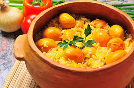
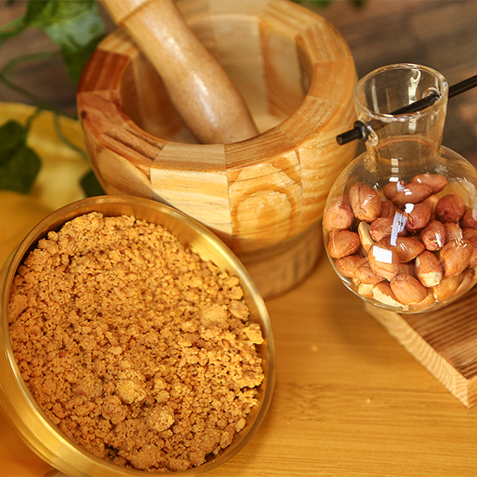
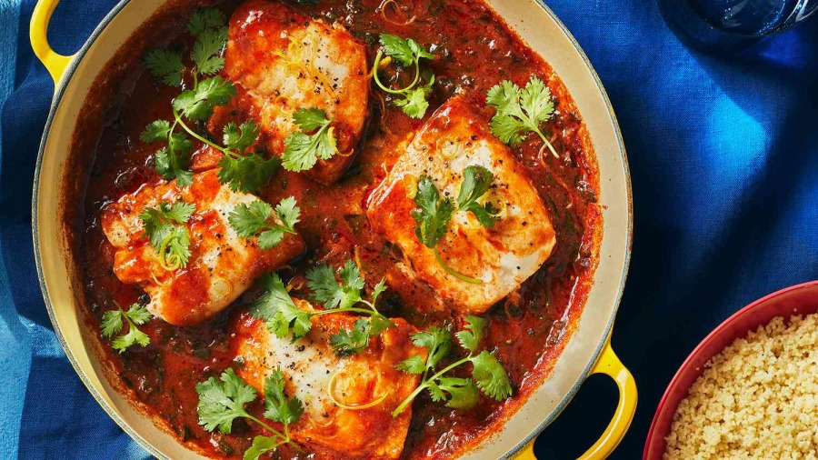

Arroz com Pequi
Um dos pratos mais famosos de Goiás, preparado com o fruto típico do cerrado: o pequi.

Paçoca de Pilão
Tradicional em Mato Grosso, é feita com carne seca socada com farinha de mandioca.

Pintado ao Molho
Prato típico do Mato Grosso do Sul, feito com o peixe pintado, comum no Pantanal.

Empadão Goiano
Um dos pratos mais tradicionais de Goiás, recheado com frango, linguiça, milho e guariroba.